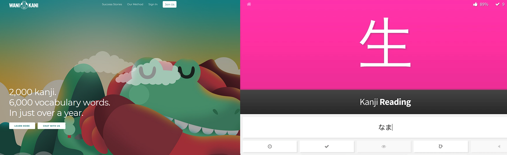
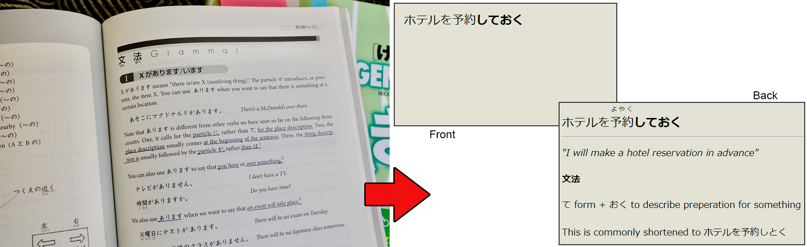
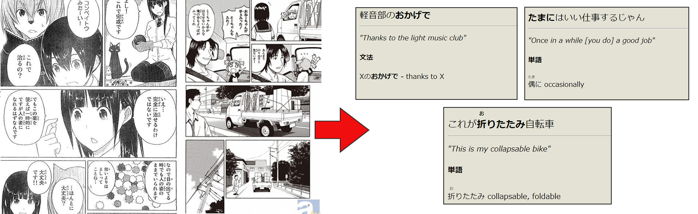
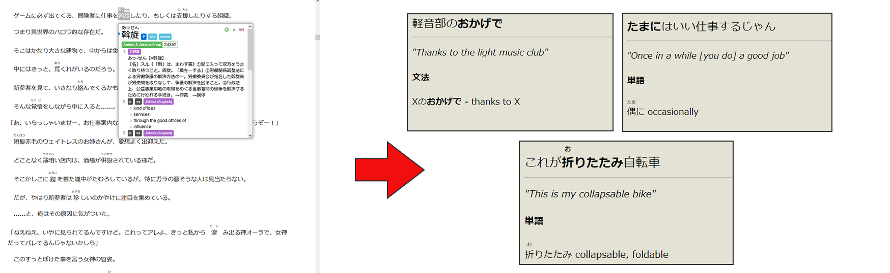
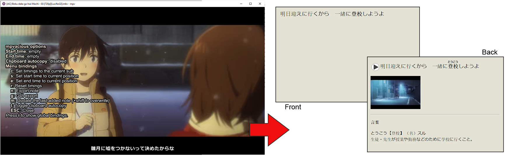
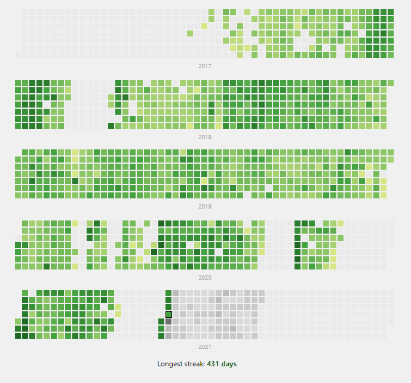

Japanese - An example approach
This is a detailed breakdown of my process for learning Japanese, which I started in 2017 and carry on to this day.
I have tried to keep it short and practical, but there is a theory section at the bottom explaining the approach in general.
1. Characters & Vocabulary
The best way to learn the Kanji characters is a hot topic. Rather than try to give my opinion about what is best, let's talk about what I actually did first.
WaniKani is a web and mobile flashcard app that teaches you 2000 Kanji characters and 5000 vocabulary words, split among 60 levels, and is how I learned all my basic Kanji and Vocabulary. I stopped at level 50, giving me around 1600 characters and 5000 vocabulary words. This took me 380 days to complete, studying 30-60 minutes a day.
To very briefly talk about the pros and cons of WaniKani - WaniKani is well presented, welcoming and doesn't feel like work, so I believe the average person has a better chance of actually finishing WaniKani than most other methods. That being said, it becomes very tempting to treat WaniKani as the 'core' of your study method and neglect actually reading and listening, which becomes a problem since WaniKani takes a long time to complete. Other methods such as doing RTK with Anki is probably more efficient for dedicated learners because you finish it more quickly, and are then forced to start reading and listening earlier.
I mostly studied on the train to work in the morning
2. Grammar
I started Grammar after I had learned about 500 Kanji characters and 1500 vocabulary words.
I bought a Grammar textbook (Genki 1 & 2). My approach to Grammar is to rapidly work through the textbook, turning the example sentences into flashcards, ignoring all exercises and quizzes. I downloaded the Anki flashcard app and made a flashcard for each grammar point from an example sentence that was given.
You can go through an entire textbook in 2-3 weeks easily this way. After finishing Genki 1 and 2, I did the same thing for another two textbooks (Tae Kim & Tobira) to look for any grammar points that were not covered in Genki. I went back and made additional flashcards for Grammar points I was having trouble remembering.
The idea of skipping all the exercises might surprise you. There is a more detailed explanation of why I think this is a good approach in the Theory section at the bottom of this page.
If you don't want to spend any money, the Tae Kim Grammar Guide is very good and arguably better than Genki for self learners.
Turning my grammar textbook into flashcards. I ended up with ~400 flashcards, making 5-10 a day
3. Beginning reading with Manga
After I had finished explicitly studying Grammar, About 5 months into studying Japanese, I started reading Manga.
While reading, I looked out for sentences that I *almost* understood, minus one thing, and made a flashcard for that one thing. This is called the 'i+1 approach'; where 'i' is what you know, and the +1 is the one extra thing that you don't. You are looking for sentences that are i+1.
As with all my sentence flashcards, the format is the same: sentence on the front, explanation on the back.
I aimed to finish one volume a month to start with, and then two a month after I was more comfortable. a volume is typically about 200 pages.
Sentence cards from Manga. Only the back is depicted. The front is just the sentence alone.
4. Reading Light Novels
After I had finished reading 20 volumes of Manga, I started reading light novels.
I mostly read light novels on the web, using the Yomichan browser add-on that shows dictionary definitions when you hover over words in Japanese. It also has a feature to export to Anki.
I created sentence flashcards in the same way I did for Manga, looking for sentences where I don't understand one thing, and creating a flashcard for that one thing. Sentence on the front, explanation on the back.
Exactly the same flashcard format as for Manga.
5. Consuming media content with MPV Player and MPVacious
MPV Player together with the MPVacious plugin lets you create flashcards automatically from movies or tv shows. At the press of a button, it takes the current subtitle, screenshot and audio clip and creates an Anki flashcard. You can even hook it up with Yomichan to include dictionary definitions automatically.
The one limitation is that you must have access to a standalone subtitle file, and video file. You can usually find subtitle files on various Subtitle database websites. MPV+MPVacious+Yomichan+Anki is an amazing workflow that lets me create flashcards in a couple of seconds easily. Setup is non-trivial however. There is a video here about how to set up the basics.
I have a slightly different format for cards I take from TV/Movies. Each flashcard I create has two different forms;
- The first form has the written sentence on the front, and then on the back it has the audio, screenshot and explanation.
- The second form has only the audio on the front (nothing else). The back then has the sentence, screenshot and explanation.
This means for every flashcard, I am testing myself separately on being able to read it, and hear it.
Only first form of these flashcards are depicted.
6. Wrapping up, where I am now
That's really all there is to it! After learning the characters and grammar, I just spent three years reading, listening and making cards.
As I stand now, I can read Manga easily, and light novels comfortably at a decent pace. I still need to look up words almost every page, but so few that it's pretty much never a barrier to understanding what's going on at a decently high resolution. My listening ability lags behind quite a bit, but I am not too unhappy with it. I can understand Anime just fine. I can understand TV dramas well except where there is a lot of rapid-fire or slurred speech.
I currently have about 9000 flashcards in total, but I probably know an equal amount of words as that passively without ever bothering to make a flashcard for it.
I'm spending my time now improving my listening skills, and starting to output (write and speak).
Here's my Anki review heatmap, including the juicy moments of weakness where life got in the way: Appendix - Advice & Tips
Motivation and study habits
- Learning a language to an advanced level takes a massive time investment, on the order of hours a day, every day, for years. Be realistic and plan your goals accordingly. It's completely OK to have a goal just to get to a basic conversational level and maintain it there, but if you want to go beyond this, you'll need to put in the time.
- If you have trouble keeping up a consistent study habit every day, a good approach is to narrow your focus - do just one small thing, but do it every day. When I first started, I only tried to do one thing - Kanji study on my morning commute - for a couple of months to build up a habit without worrying about grammar, reading etc. Then when I'd built up the habit, I started to layer in Grammar study and reading slowly over time.
- There is the concept of "habit stacking". Taken from jamesclear.com: "One of the best ways to build a new habit is to identify a current habit you already do each day and then stack your new behavior on top." An example from my life is that I read novels in Japanese every time I sit down to eat at my lunch break at work. The base daily habit was eating over lunch break, and on top of it I stacked reading practice.
- I highly recommend keeping a study diary where you can record your thoughts and milestones.
Flashcards and Anki
- Although pre-made Anki decks do exist, I recommend avoiding them and making your own. You will remember the content better this way. Although, if you are not using WaniKani then it is probably acceptable to go through a small pre-made vocabulary deck before doing grammar.
- I try to make 5-10 cards a day.
- My early cards have the sentence in English on the back as a crutch, but you should stop doing this as soon as you are comfortable.
- Once I started reading light novels, every time I made a new flashcard I looked up the definition in a Japanese-only dictionary. If I understood it, I would put the definition in Japanese on the back of the card instead of English. As I got better, it meant that the majority of my new cards have no English on them at all.
My personal regrets
- I made a mistake in focusing too heavily on reading for the first three years. If I could go back, I would make sure I watched at least an hour or two of Anime/Drama every day.
Appendix - Theory And Approach
My approach is largely based on *the input hypothesis* by linguist Stephen Krashen. The Input Hypothesis states that languages cannot be acquired through treating language like a mathematics equation, where you drill conjugations and grammar points over and over. Instead, language is acquired through repeated, constant exposure to the language (immersion). As such, I spend zero time doing conjugation drills, fill-in-the-blank quizzes, roleplaying exercises or anything else like that. Instead, the goal is to start reading and listening as soon as possible, not to spend too much time on grammar, and use Anki flashcards as a safety net that ensures repeated exposure to grammar patterns and vocabulary regularly.
Another way I like to explain it goes like this: imagine two hypothetical students. The first student spends 20 hours up-front mastering the Potential form of verbs. The second student spends 10 minutes on it. If you were to give them a quiz the next week on the Potential form of verbs, the first student would of course do better, after all they spent many hours more studying it. But what if you quizzed them both a month later? Six months? Several years? Any amount of up-front study is meaningless in the face of the *years* of time you will need to learn a language.
How much time you spend trying to master a grammar point doesn't matter, what matters is consistent repeated exposure over a long period of time. So get through those grammar books to give yourself a baseline in as little time as possible, don't worry about mastering it, and try to read and listen as soon as possible. Speaking will come naturally later on.
- [1] Linguist David Krashen on how we learn languages
- [2] Polyglot David Kaufmann on not trying to master beginner material
- [3] The Anki Manual on Memory, Recall and SRS
- [4] Krashen on reading (long)
Appendix - My timeline
2017
- June - Started learning Kanji and Vocabulary with WaniKani
- August - Started Grammar
- September - Finished Grammar, started reading Manga
2018
- June - Finished studying Kanji
- August - Started reading Light Novels
- December - Finished this year having read 3 light novels and 20 volumes of Manga
2019
- December - Read 18 light novels this year
2020
- December - Read 6 novels this year
- December - Focusing more on listening
2021
- January - This year is going to be spent mostly on listening and starting to speak
Appendix - My Reading List
Manga- 8x Yotsuba
- 5x K-On
- 1x Dragonball
- 1x Pokemon
- 2x Hitoribochi
- 2x Flying Witch
- 1x Nausicaa
- x8 Konosuba
- x1 Joushikousei
- x1 Shokugyou shouhin
- x1 No Game No Life
- x2 Overlord
- x1 Welcome to the NHK
- x7 Tate No Yuusha
- x3 Kumo Desu Ga